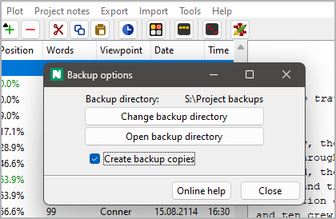
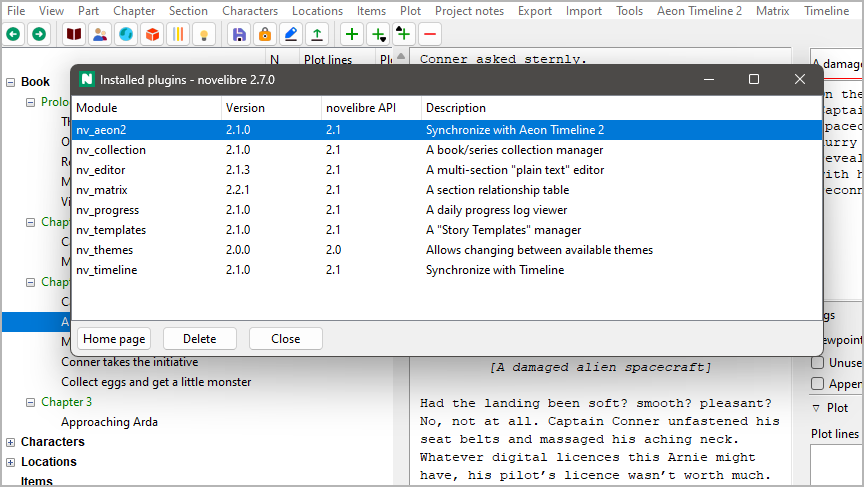

Tools menu
Miscellaneous functions
Note
The Tools menu can be extended by plugins to add more features.
Backup options
Project independent program settings
With Tools > Backup options, you can open a dialog for settings concerning the backup.
The path to the backup directory is displayed at the top of the window, if one is set.
Change backup directory
This opens a directory selection dialog with which you can select the backup directory.
Tip
To take precautions against hard disk failure, you can also specify an external drive or a USB stick.
Open backup directory
This opens the backup directory with the file manager. This is for quick access if you want to restore a project file.
Create backup copies
If this field is checked, novelibre creates a compressed copy of the project file in the set backup directory each time it is saves.
Hint
This allows you to temporarily switch off the backup, whereby the backup directory remains set.
Open installation folder
Launch the file manager
With Tools > Open installation folder, you can launch the file manager with the novelibre installation folder. This might come in handy if you wish to edit configuration files, or install your own plugins.
Plugin manager
Display and manage installed plugins
With Tools > Plugin manager, you can open the Installed plugins dialog.
Successfully installed plugins are displayed black on white by default.
Outdated plugins are grayed out.
Plugins that cannot run are displayed in red, with an error message.
- How to update a plugin
Select the plugin you want to update. If the Home page button is activated, you can click on it, and your system browser opens the plugin home page. Otherwise, you have to know the source of the plugin yourself.
Go to the plugin home page and download the latest release. Install it according to the instructions.
- How to uninstall a plugin
Select the plugin, and click on the Delete button.
About version compatibility
On the window frame, you see the novelibre version, consisting of three numbers that are separated by points.
<major version number>.<minor version number>.<patch level>
In the novelibre API column, you see the plugin’s compatibility information, consisting of two numbers that are separated by points.
<major version number>.<minor version number>
- The rule for compatibility
The plugin’s novelibre API major version number must be the same as novelibre’s major version number.
The plugin’s novelibre API minor version number must be less than or equal to novelibre’s minor version number.
- Fix incompatibilities
If the plugin’s novelibre API major version number is greater than novelibre’s major version number, novelibre needs to be updated.
If the plugin’s novelibre API major version number is less than novelibre’s major version number, the plugin needs to be updated.
If the plugin’s novelibre API minor version number is greater than novelibre’s minor version number, novelibre needs to be updated.
Show notes
Show an HTML report with all the “sticky notes”
With Tools > Show notes, you can create a list-formatted HTML file that contains all “sticky notes” along with the titles of the tree elements they are associated with, and launch your system’s web browser for displaying it.
Note
The report is a temporary file, auto-deleted on program exit. If needed, you can have your web browser save or print it.